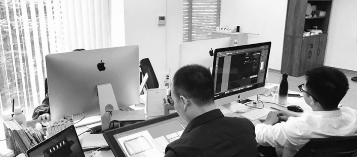
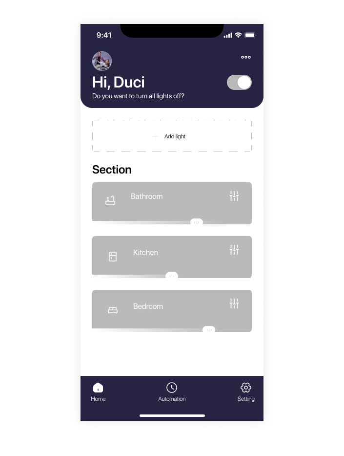
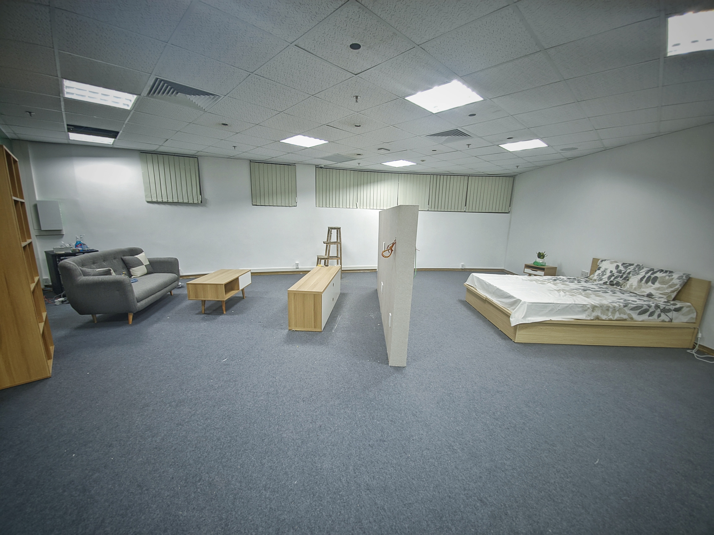
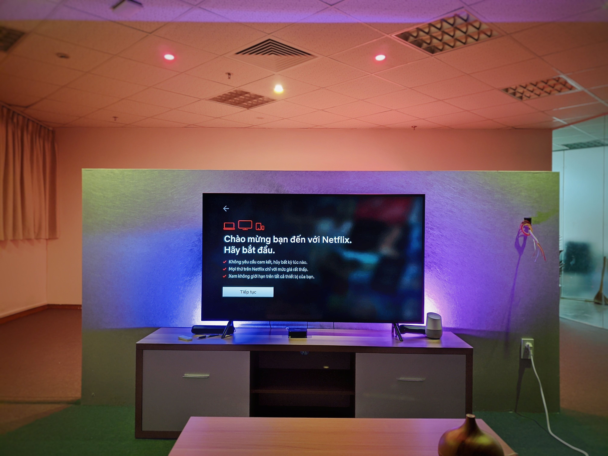
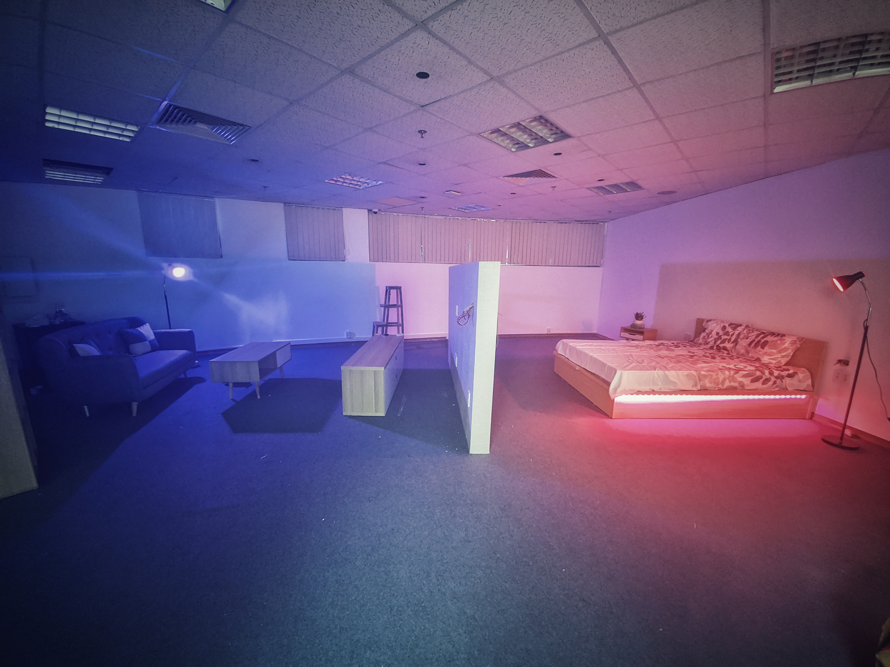
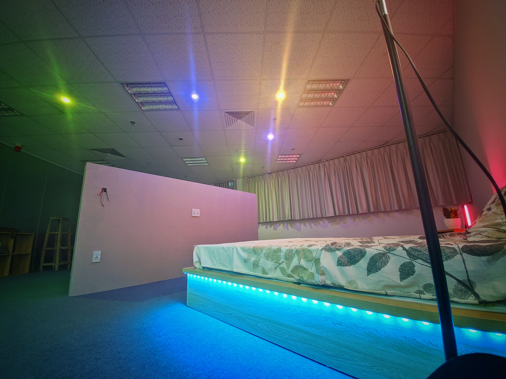

How it was like
I worked as an UX designer and got a chance to lead a team of 3 members including Graphic Designer, Industrial Designer & UI Designer. Our mission was to create smart bulb from package to its shape and the application to control it.
Four of us was working closely together on this project.
Approach
The overall view is always my top priority when I start a project, not only from a designer’s view but other aspects. Talking to stakeholders helps me grabbing the ideas of bussiness goals as well as their needs and wants. Plus, having a conversation with them regularly is also a good way to build relationship, which is very important in the work.
Expectations & Visions
Shareholders always got their expectations about the project, even there is nothing clear in their mind at the beginning stages (which usually happens), I”ll always ask them some questions to get their ideas, pain points, what they need, etc. Capturing these things is essential. It minimizes risk, saves time and team’s effort. And below is what I got after discussing with them:
- Modern-looking, minimalist & bright tone.
- Easy to use.
- Cross-platform.
- Goal: Largest smart light supplier for business customers (B2B)
- Target group of user: young and middle-aged customers, successful, good financial, living in apartment in developed cities. Technology-lovers and willing to pay to improve the convenience of life.

Grabbing stakeholder’s expectations and list them down.
Challenges
The biggest challenge that I faced was the shareholders’ misconception. To them, all about design was just the “look” side, and they wanted it to be done as quickly as possible. To cope with it, I did show them the 3W:
- WHAT exactly we were going to do.
- WHY we needed to perform it, and:
- WHEN should we make it.
Another problem we had was that manpower shortage to start the job as we aimed. However, this is a part of work, and our job is to find solution for it.
Action
1. Research product
Lack of knowledge about new domain made us felt a bit confused to get started. So I decided to research informations about “Light” and transfered it to the whole team, here was the list to begin:
- Types of bulbs.
- Uses of each.
- Connection methods.
- Smart bulb’s pros and cons.
Next step, I wanted the team could understand how a smart light works, so we purchased some light bulbs, this would benefit:
- The industrial designer would know the bulb’s components and how it attached to each other.
- The graphic designer could have some ideas about the package look by its features, functions and tons of others elements.
- The UI designer would sketch about the icon, the mood, the style of the product.
- On my side, I had a picture of how a smart light works. Plus, I would know where my competitors were going and if there was anything I could improve on.

Setting up the light.
2. Research users
After I got some informations from real product testing, I wanted to discuss it with relevant teams, which were engineers and stakeholders. They gave me a list of features that at that time the technology we had was able to do and what features they wanted to have. I took them and decided to research on real users, who was going to use our product.
Based on our target group of user that we created before, I broke it down to 2 categories:
- Experienced in using light automation.
- Never used it but interested about it.
I made these 2 groups of user because I wanted to hear their thoughts and opinions stood on their knowledge. Then I’ll try to reconcile it and to come up with a one-size-fits-all solution.
Here was the result:
Experienced users:
- Optimize connection method/reduce steps.
- Unlimited number of lights.
- Other brand accepted.
- Control it from everywhere on Earth.
Non-Experienced users:
- Easy to connect.
- Voice control.
- Other brand accepted.
- More color-mixed.
3. Create user personas
A deep understanding of target audience is required if we aim for a good product. So then I made up User Personas to list down everything we knew so far about our users.

Creating User Personas (Information has been changed due to privacy policy)
Further more, User Personas also benefits to different roles like Graphic Designer and UI Designer, they will have more clues to visualize things that fit with end users.
3. User flow
Next step, I decided to craft User Flow’s first version so stakeholders and relevant departments could be able to understand how users interact with the app. This step is more cruicial for the developers, they would basically know their tasks in future and could make a well preperation.
Keeping closely relationship with developers is also so important. I was always kept talking to them, dicussing my ideas about everything related to the design: from the flow to the interaction, UI, animation, etc. I just wanted to make sure we were totally getting our points. Imagine when you’ve done something and the answer you took from them is: “Sorry, we don’t have enough resources to perform it” or “The time is running out, we have to find the simpler solutions”. It’s so frustrated!

Crafting User Flow
4. Wireframe
Next, I was designing the low-fidelity version of Wireframe. This is always my most favorite part. Everything we gathered before now could be translated to the design to keep testing on users.
After finished it, I made a test on a project-wide scale, where every members tried it and gave feedback. Then I did prototyte for the mid-fidelity Wireframe and tested it on real users: Here was something I got:
- Users wanted to connect their bulb without sign in.
- They wanted to control the light right at the room screen.
Creating Low-Fidelity Wireframe
At this stage, UI was started to create. The UI guy and I were collecting moodboard then trying to create some of the concepts. Stakeholders seemed really couln’d wait to see how our app would look like, so I gathered the develope teams and we made plans together to boost up the UI process.
I told them everything about our ideas, how it would be look like and in return, we also open to hear their advice, I wanted to know if it was possible to perform or not. Everything was to make sure that all risks must be kept to a minimum and the only way to do it is to maintain communication.
After that, I kept improving Wireframe and made the high-fidelity one. This thing could help calm our stakeholders and our users could find it easier to spread their thoughts.
Creating High-Fidelity Wireframe
4. Usability testing
At that point, I came up with this idea: why don’t we make a testing environment, where users could experience the product in the place looks like their home. After this idea was passed, I listed groups of testing audiences and started designing the place. It took 2 weeks to complete from sketching, designing, procuring materials, constructing and finishing.
I wanted to build a place that resembled an actual house as much as possible, this made it more comfortable for users to use and give their opinions.
Designing testing environment.
To made sure other jobs were still running smoothly, I only gathered enough members to do some of the main features that we were going to build. Beside, I also created scenarios for users to complete the task then we would see where they found unsatisfy.
  Testing on real user.
This test gave us invaluable feedbacks from real users. They were tested on an interoperable product, which gave the best indication of what they are satisfied/dissatisfied with. And for an UX designer, nothing is more valuable than this genuine responses, here was what I found:
- They wanted to be able to control all light at one time.
- They wished there were more scenarios to choose.
- They wanted their light’s setting could be saved and restored.
Growth
Working in an early-stage startup was an amazing path that taught me alot. I do always look back to see if I there’s anything needed to be changed, and here are some key takeaways from this project:
- You can’t satisfy all users.
- There’s no standard procedure. Be flexible.
- Make sure that your stakeholders (and other relevant teams) are totally understand your team’s role and work.
- Keep testing at any stage you can.
- Don’t try to be perfect at the beginning time.
And, finally, here are some of the main screens that I made, take a look at it:

Overview

Log in/Sign up

Home section

Managing lights

Adjusting light

Setting up animation

Setting
Thanks for watching!
Role
- From scratch
- Leader
- UX Research
- UX Design
- Wire-frame
- Mobile-App
You might like these